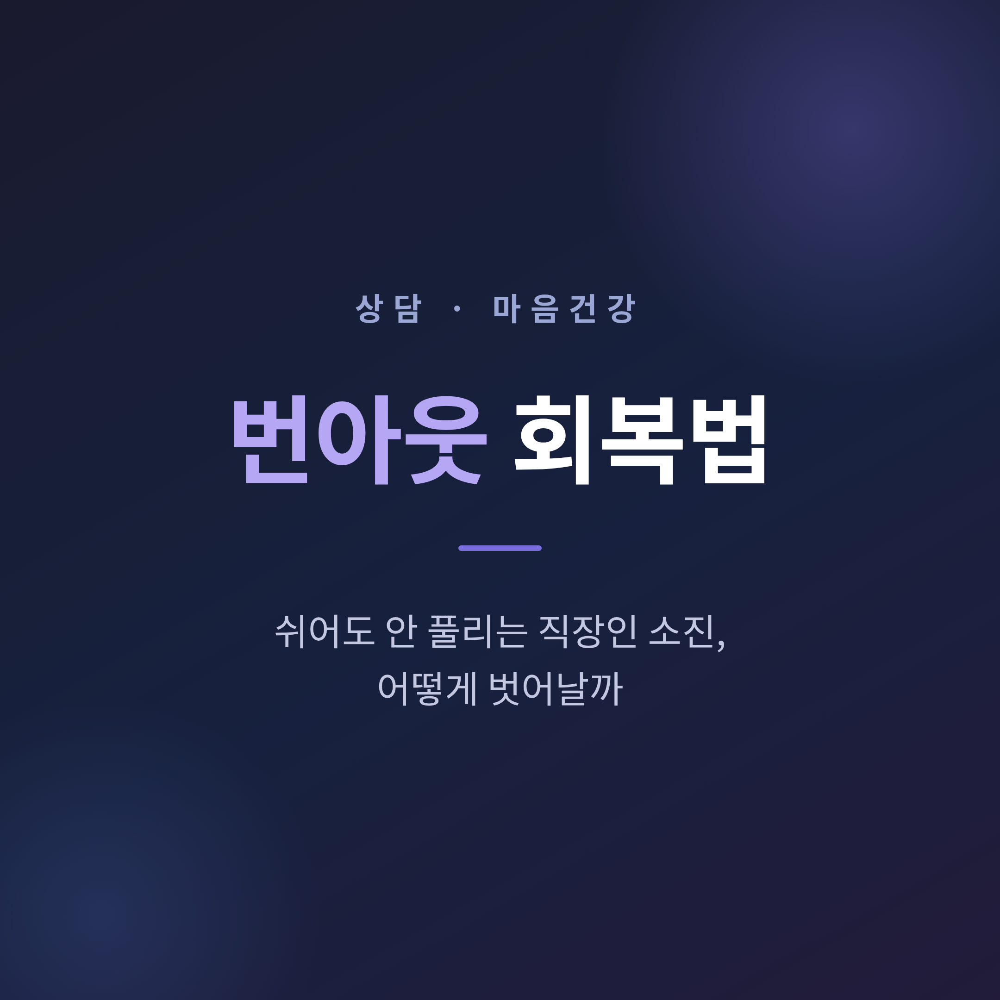
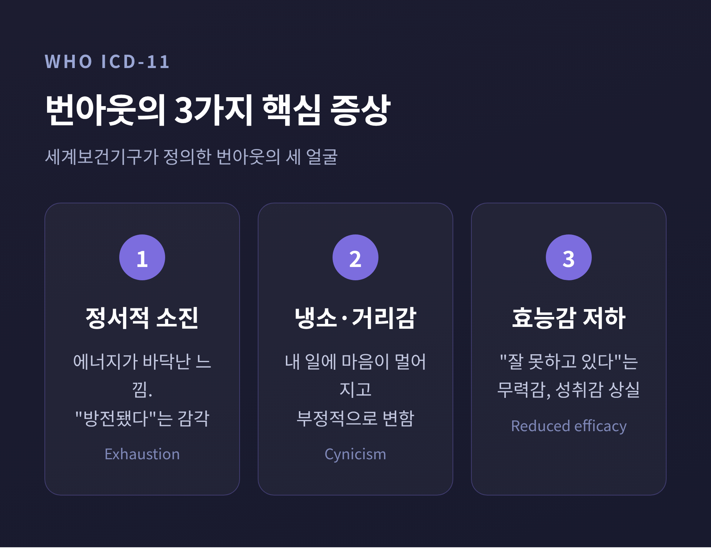
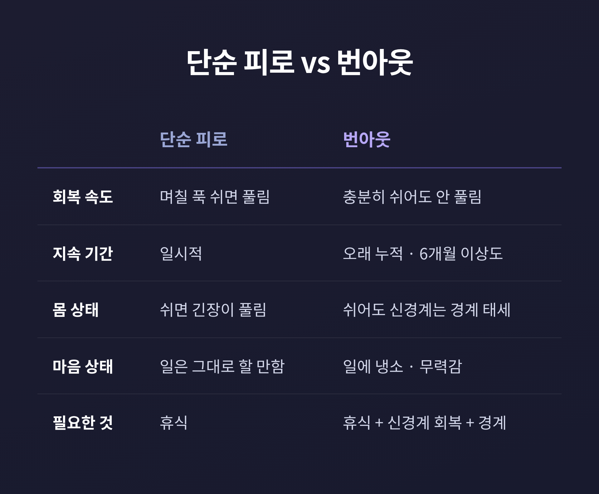
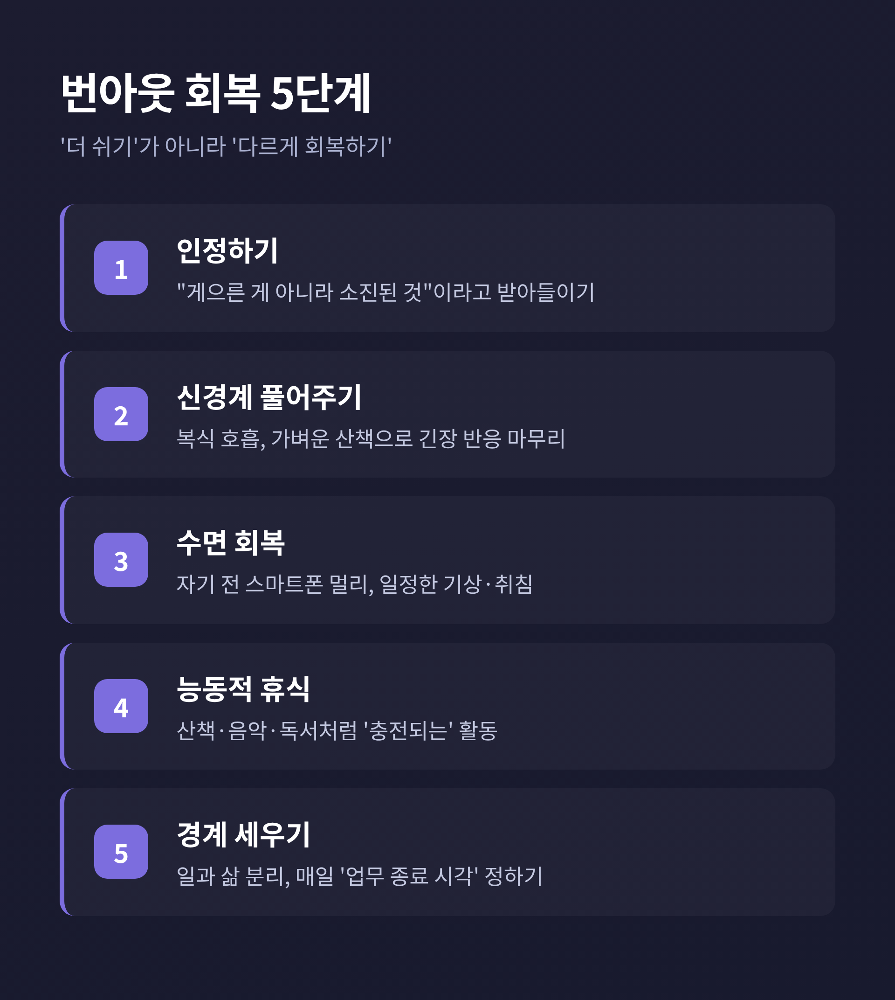
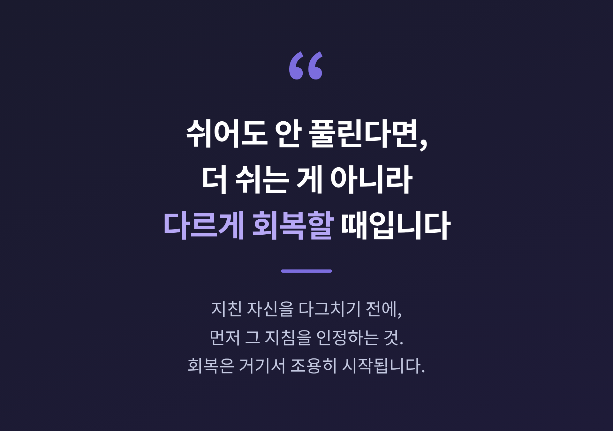

주말 내내 쉬었는데도 월요일 아침이면 다시 방전된 기분.
이번 글에서는 단순 피로와 다른 '번아웃'이 무엇인지, 왜 쉬어도 풀리지 않는지, 그리고 어떻게 단계적으로 회복할 수 있는지 정리해 보겠습니다.
먼저 핵심부터 짧게 말씀드리겠습니다.
이 글은 일반적인 정보 제공을 위한 것으로, 전문적인 진단이나 상담을 대체하지 않습니다.
무기력과 우울이 일상생활을 어렵게 할 정도로 이어진다면, 글 마지막의 안내를 참고해 전문가의 도움을 받으시길 권합니다.
번아웃은 의외로 공식적인 개념입니다.
세계보건기구(WHO)는 2019년 국제질병분류(ICD-11)에 번아웃을 등재했습니다.
다만 한 가지 짚어둘 점이 있습니다.
번아웃은 '질병'이 아니라 '직업적 현상'으로 분류됩니다.
WHO의 정의는 이렇습니다.
"성공적으로 관리되지 못한 만성적 직장 스트레스로 인해 생기는 증후군."
여기서 두 단어가 중요합니다. '만성적', 그리고 '직장'.
하루 이틀의 피로가 아니라 오래 쌓인 것이고, 주로 일의 맥락에서 생긴다는 뜻입니다.
WHO는 번아웃의 모습을 세 가지로 나눕니다.
이 셋 중 하나만 도드라져도 신호일 수 있습니다.
특히 예전엔 즐겁던 일이 지금은 버겁게만 느껴진다면, 한 번쯤 자신을 돌아볼 때입니다.

수치를 보면 번아웃은 꽤 흔한 경험입니다.
2024년 잡코리아 설문에서는 직장인의 69%가 번아웃을 겪은 적이 있다고 답했습니다.
연령대별로는 30대가 75.3%로 가장 높았고, 20대 61.1%, 40대 60.5%였습니다.
같은 해 글로벌 기업 UiPath의 조사에서는 한국 응답자의 93%가 번아웃 경험을 보고했습니다.
조사 대상과 문항이 달라 수치 차이는 크지만, 방향은 분명합니다.
상당수의 직장인이 이미 겪고 있다는 것입니다.
원인 1위로 꼽힌 것은 '과도한 업무량'이었습니다.
혼자만의 의지 문제가 아니라는 뜻이기도 합니다.
가장 답답한 지점이 여기입니다.
분명 쉬었는데, 왜 회복이 안 될까.
단순 피로는 며칠 푹 자면 풀립니다.
하지만 번아웃은 충분히 쉰 뒤에도 무기력이 남고, 일에 대한 냉소가 가시지 않습니다.
여기엔 몸의 이유가 있습니다.
만성 스트레스가 길어지면 부신의 코르티솔 호르몬과 교감신경이 계속 항진됩니다.
그러다 어느 순간 코르티솔을 충분히 만들지 못하는 지점에 이르면, 몸의 항상성이 깨지고 피로물질이 쌓입니다.
신경계의 관점에서 보면 이렇게 설명할 수도 있습니다.
오랫동안 긴장 상태에 머문 신경계가 이완하는 법을 잊어버린 상태라는 것입니다.
회복되지 못한 스트레스가 매번 작은 잔여물을 남기고,
그 기준선이 조금씩 높아지면서 '견딜 수 있는 범위'가 점점 좁아집니다.
그래서 누워서 쉬어도 몸 안쪽은 여전히 긴장하고 있습니다.
침대에 있어도 신경계는 경계 태세인 셈입니다.
예전엔 주말 이틀이면 충전됐습니다.
지금은 그 이틀이 아무 효과가 없습니다 — 바로 이 차이가 번아웃의 신호입니다.

그렇다면 어떻게 벗어날까요.
핵심은 '더 오래 쉬기'가 아니라, 신경계와 생활을 함께 되돌리는 것입니다.
여러 자료가 공통으로 권하는 흐름을 정리하면 이렇습니다.
1단계 — 인정하기 "나는 게으른 게 아니라 소진된 상태다." 이 인정이 출발점입니다. 자책을 멈추는 것만으로도 회복의 첫 단추가 끼워집니다.
2단계 — 신경계 풀어주기 긴장된 몸의 스트레스 반응을 마무리해 줘야 합니다. 복식 호흡을 하루 몇 차례, 가벼운 산책, 가벼운 운동. 규칙적인 유산소 운동은 코르티솔을 낮추고 세로토닌 분비를 돕습니다. 다만 이미 너무 지쳤다면 고강도 운동보다 짧은 산책부터 시작하시길 권합니다.
3단계 — 수면 회복 번아웃은 피곤해도 잠들기 어렵거나 자주 깨는 수면 문제를 자주 동반합니다. 잠들기 한 시간 전엔 스마트폰을 멀리하고, 기상과 취침 시각을 일정하게 맞춰 봅니다.
4단계 — 능동적 휴식 누워서 영상만 보는 것은 진짜 휴식이 아닙니다. 가벼운 산책, 좋아하는 음악, 짧은 독서처럼 '충전되는' 활동이 도파민 체계를 정상으로 되돌리는 데 더 낫습니다.
5단계 — 경계 세우기 일과 삶을 분리합니다. 무리한 요구에는 정중히 거절하고, 매일 저녁 '업무 종료 시각'을 정해 둡니다. 경계를 세우는 것은 번아웃 회복에서 가장 효과적인 방법 중 하나로 꼽힙니다.
작은 성취를 다시 쌓는 것도 빼놓을 수 없습니다.
효능감이 무너졌다면, 아주 작은 일부터 해내며 "할 수 있다"는 감각을 되찾아 갑니다.

거창하지 않아도 됩니다.
오늘부터 바꿀 수 있는 작은 것들을 적어 봅니다.
한 번에 다 바꾸려 하지 않아도 됩니다.
하나씩, 회복도 작은 성취의 누적이기 때문입니다.
번아웃은 병명은 아닙니다.
그러나 방치하면 우울증이나 공황장애 같은 상태로 이어질 수 있습니다.
스스로 점검하실 부분이 있습니다.
일상생활이 어려울 만큼의 무기력이나 우울감이 2주 이상 이어진다면, 혼자 버티지 마시길 바랍니다.
그럴 때는 정신건강의학과나 심리 상담 전문가의 문을 두드리는 편이 현명합니다.
도움을 구하는 것은 약함이 아니라, 회복을 위한 합리적인 선택입니다.
참고하실 만한 공공 자원도 적어 둡니다.
다시 한번 말씀드리면, 이 글은 일반적인 정보일 뿐 전문적 진단을 대신할 수 없습니다.
구체적인 상태 판단과 치료는 반드시 전문가와 상의하시길 바랍니다.
정리하면 이렇습니다.
번아웃은 의지가 약해서 생기는 일이 아닙니다.
오래 쌓인 소진이고, 그래서 회복도 시간과 단계가 필요합니다.
"쉬어도 안 풀린다면, 더 쉬는 게 아니라 다르게 회복할 때입니다."
지친 자신을 다그치기 전에, 먼저 그 지침을 인정하는 것.
회복은 거기서 조용히 시작됩니다.
